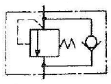
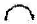
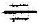
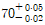
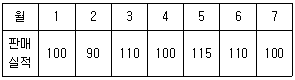
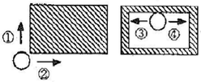

금형제작기능장 (2012-04-08 기출문제)
1과목: 임의 구분
1. 릴리프 밸브 등에서 밸브 시트를 두들겨서 비교적 높은음을 발생시키는 일종의 자려 진동 현상을 의미하는 용어는?
- 서지 압력 현상
- 캐비테이션 현상
- 맥동 현상
- 채터링 현상
(정답률: 67%)

2. 유압 모터에서 가장 효율이 높고 최대 압력이 높은 유압펌프는?
- 피스톤 펌프
- 기어 펌프
- 베인 펌프
- 나사 펌프
(정답률: 87%)
3. 공압 캐스케이드 회로의 특성에 대한 설명으로 옳은 것은?
- 방향성 리미트 밸브를 사용하므로 신뢰성이 보장된다.
- 복잡한 작동 시퀀스도 배선이 간단하다.
- 캐스케이드 밸브가 많아지게 되면, 제어 에너지의 압력 강하가 발생한다.
- 캐스케이드 밸브가 많아질수록 스위칭 시간이 짧아진다.
(정답률: 81%)
4. 2개의 복동 실린더가 1개의 실린더 형태로 조립되어 있고 길이 방향으로 연결된 복수 실린더를 갖고 있으므로 실린더의 직경이 한정되는 반면에 출력이 거의 2배로 큰 힘을 얻는데 가장 적합한 공압 실린더는?
- 충격 실린더
- 케이블 실린더
- 탠덤 실린더
- 다위치형 실린더
(정답률: 85%)
5. 다음 그림 기호는 무엇을 나타내는 유압 기호인가?

- 체크밸브 붙이 유량제어 밸브
- 파일럿 작동형 릴리프 밸브
- 파일럿 작동형 시퀀스 밸브
- 카운터 밸런스 밸브
(정답률: 58%)
6. 와이어 컷 방전가공에서 가공액의 역할이 아닌 것은?
- 극간의 절연회복
- 방전 폭발압력의 발생
- 방전 가공부분의 냉각
- 와이어 전극 공급 제어
(정답률: 58%)
7. 도전성의 가공물은 그 재질 및 경도에 관계없이 고정도의 가공이 가능하며 또한 가공액으로 물을 사용하므로 화재의 염려가 없어 무인운전이 가능한 공작기계는?
- 머시닝센터
- 공구연삭기
- CNC 선반
- 와이어 컷 방전가공기
(정답률: 80%)
8. 화학가공을 이용한 형상제작에서 부식가공이 있는데 다음 부식 가공 공정순서로 맞는 것은?
- 탈지 → 마스킹 → 산처리 → 패턴형성 → 부식
- 마스킹 → 패턴형성 → 산처리 → 탈지 → 부식
- 산처리 → 마스킹 → 패턴형성 → 부식 → 탈지
- 부식 → 마스킹 → 산처리 → 패턴형성 → 탈지
(정답률: 62%)
9. 동전이나 메달 등의 앞 ㆍ 뒤쪽 표면에 모양을 만드는 가공법은?
- 블랭킹
- 스웨이징
- 드릴링
- 코이닝
(정답률: 73%)
10. 금형 제작상의 특징 중 금형제품이 주조제품에 비해 우수한 장점을 설명한 것으로 틀린 것은?
- 비교적 큰 제품의 생산에 유리하다.
- 제품의 품질을 균일화, 표준화 시킬 수 있다.
- 제품의 강도를 증가시킬 수 있다.
- 치수 정밀도를 높일 수 있다.
(정답률: 64%)
11. 프레스 작업 중 안전에 가장 중요한 것은?
- 다이의 점검
- 동력이 점검
- 펀치의 점검
- 클러치의 점검
(정답률: 64%)
12. 드릴 가공의 종류 중 볼트 또는 너트의 머리 부분이 가공물 안으로 묻히도록 단이 있는 구멍을 절삭하는 방법을 무엇이라 하는가?
- 카운터 보링
- 리밍
- 널링
- 태핑
(정답률: 85%)
13. 특수강을 만들 때, 탄소강에 담금질이 잘되도록 자경성을 높여주는 합금원소가 아닌 것은?
- Cr
- Cu
- Ni
- Mn
(정답률: 72%)
14. 플라스틱 금형에 사용되며 절삭성이 우수한 회주철의 탄소 조직은?
- 편상 흑연
- 구상 흑연
- 화합 탄소
- 뜨임 탄소
(정답률: 46%)
15. 다음 중 니켈 활동에 대한 설명으로 틀린 것은?
- 7:3 활동에 10~20% Ni을 첨가한 합금이다.
- 은백색을 띠고 있어 양백이라고도 한다.
- 전기저항체, 밸브, 콕크, 광학기계 부품 등에 사용된다.
- 함석황동이라고도 한다.
(정답률: 60%)
16. 재료의 내마모성을 측정할 때 시험결과에 미치는 인자가 아닌 것은?
- 표면조도
- 마모시험에서 발생한 미분처리 여부
- 재료의 연신율
- 윤활제 사용여부
(정답률: 55%)
17. 점거리가 116mm인 인장시편을 최대하중 3000kg의 중에서 절단되었고 이때 길이는 120mm이었다. 이 재의 연실율은 몇 %인가?
- 5.20
- 4.60
- 3.45
- 2.03
(정답률: 55%)
18. 체 침탄법에서 사용되는 촉진제로 적합하지 않은 것은?
- 탄산칼륨
- 염화칼슘
- 염화나트륨
- 탄산나트륨
(정답률: 79%)
19. 다음 중 다이캐스팅 합금으로 요구되는 성질이 아닌 것은?
- 유동성이 좋을 것
- 열간취성이 적을 것
- 응고수축에 대한 용탕보급성이 좋을 것
- 금형에 대한 점착성이 좋을 것
(정답률: 70%)
20. 하공차와 그 기호가 잘못 짝지어진 것은?
- 면의 윤곽도 :

- 경사도 :
- 대칭도 :

- 진원도 :
(정답률: 78%)
2과목: 임의 구분
21. 이지 블록과 같이 밀착이 가능하므로 홀더가 필요 없으므로 각도의 가산, 감산에 의해서 필요한 각도를 조합할 수 있고 조합 후 정도는 2~3“인 것은?
- 오토콜리메이터
- N.P.L식 각도게이지
- 기계식 각도 정규
- 수준기
(정답률: 70%)
22. 어의 측정에서 볼 또는 핀 등의 측정자를 전체 원둘레 따라 아 홈의 양측 차면에 접하도록 삽입하여 측정자 반지를 방향 위치의 변동을 측미기로 읽었다. 이때 이 금값의 최대값의 차이를 무엇이라 하는가?
- 치형오차
- 피치오차
- 이 홈의 흔들림
- 이두께오차
(정답률: 53%)
23.

의 치수공차 표시에서 최대허용치수는?- 70.03
- 70.⑤
- 69.98
- 69.⑤
(정답률: 81%)
24. 표면거칠기를 측정하는 방식에 해당하지 않는 것은?
- 광절단식
- 촉침식
- 현미 간섭식
- 광택식
(정답률: 60%)
25. 호칭치수 25mm의 K6급 구멍용 한계게이지의 통과측 치수허용차로 가장 옳은 것은? (단, K6급 공차는 위치수 허용차 +2㎛, 아래치수 허용차 -11㎛이며, 게이지 제작공차는 2.5㎛, 마모여유는 2.0㎛으로 한다.)
- 25.002 ± 0.00125mm
- 25.0025 ± 0.001mm
- 24.991 ± 0.00125mm
- 24.9915 ± 0.001mm
(정답률: 48%)
26. 봉재와 같은 원형부품의 위치결정시 수직(상하방향)중심의 정도가 가장 중요할 때 사용되는 V블록의 각도로 가장 적합한 것은?
- 60°
- 90°
- 115°
- 120°
(정답률: 55%)
27. 채널지그(channel jig)의 용도를 바르게 설명한 것은?
- 공작물의 두면에 지그를 설치하여 제 3표면을 단순히 가공을 할 때 사용하며, 정밀한 가공보다 생산 속도를 증가시킬 목적으로 사용된다.
- 공작물이 얇거나 연질의 재료인 경우 가공 중 발생할 수 있는 변형을 방지하기 위하여 활용한다.
- 공작물의 형태가 불규칙하거나 넓은 가공면을 가지고 있는 비교적 대형 공작물 가공에 사용된다.
- 공작물의 가공이 일정한 각도로 이루어지거나 공작물의 측면을 가공할 경우 사용된다.
(정답률: 72%)
28. 스윙 클램프와 유사하나 훨씬 더 작으며, 좁은 장소에서 사용되며 하나의 큰 클램프보다는 오히려 작은 클램프를 사용해야 할 경우에 유효한 클램프는?
- 후크 클램프(hook clamp)
- 쐐기형 클램프(wedge clamp)
- 스트랩 클램프(strap clamp)
- 캠 클램프(cam clamp)
(정답률: 56%)
29. 다음 중 드릴부시(drill bush)의 종류가 아닌 것은?
- 삽입부시
- 고정부시
- 라이너부시
- 데프콘부시
(정답률: 67%)
30. 블랭크 지름이 85mm이고, 제품의 지름이 55mm인 원통을 만들려고 한다. 드로잉율은 약 몇 %인가?
- 30
- 65
- 79
- 88
(정답률: 72%)
31. 프레스금형 설계를 할 때 파일럿 핀(Pilot pin)을 사용하는 가장 큰 이유는?
- 제품을 정확히 벤딩(bending) 시키기 위해
- 제품을 펀칭(Punching)하기 위해
- 제품의 위치를 결정하기 위해
- 제품을 돌출하기 위해
(정답률: 74%)
32. 블랭킹 작업 시 전단력을 작게하기 위한 가장 효과적인 방법은?
- 다이에 전단각(shear angle)을 준다.
- 펀치와 다이의 틈새(clearance)를 작게 한다.
- 프레스의 가공속도를 빨리 한다.
- 펀치와 다이의 모서리를 날카롭게 한다.
(정답률: 69%)
33. 펀치 쏠림현상의 원인으로 가장 관계가 적은 것은?
- 프레스 정도 불량
- 금형의 취급 부주의
- 펀치의 고정 불량
- 펀치의 전단각 불량
(정답률: 50%)
34. 다음 중 맞춤 핀(dowel pin)의 사용용도로 가장 적합하게 설명된 것은?
- 금형의 부품 복원, 조립, 위치결정을 위하여
- 재료의 굽힘 방지를 위하여
- 재료의 반출, 반입을 정확히 하기 위하여
- 볼트(bolt)의 위치를 정확히 하기 위하여
(정답률: 80%)
35. 가이드 포스트(guide post)가 4개 고정되어 있는 다이셋트(die set)는 어느 것인가?
- CB형
- BB형
- DR형
- FB형
(정답률: 78%)
36. 전단가공에서 블랭크가 펀치와 함께 따라 올라오는 블랭크 업 또는 스크랩 부상 현상의 대책으로서 틀린 것은?
- 다이 날 부분에 미소 R 또는 C를 붙인다.
- 펀치에 시어 각을 붙인다.
- 클리어런스를 크게 한다.
- 펀치에 에어 홀을 설치한다.
(정답률: 61%)
37. 블랭크(소재) 직경이 200mm이며 이것을 드로잉 가공하였을 때 제품의 직경이 120mm, 소재 두께를 1mm라 하였을 때 축소율(%)은?
- 30
- 40
- 50
- 60
(정답률: 46%)
38. 나사가 있는 성형품의 언더컷 처리 방법이 아닌 것은?
- 회전기구에 의한 방식
- 핀 슬라이드에 의한 방식
- 분할형에 의한 방식
- 컬랩시블 코어에 의한 방식
(정답률: 67%)
39. 사출금형 설계 시 파팅 라인(parting line)을 정하는데 유의사항이 아닌 것은?
- 마무리가 잘될 수 있는 위치 또는 형상으로 한다.
- 언더컷을 피할 수 있는 구조로 한다.
- 눈에 잘 보이는 위치 또는 형상으로 한다.
- 금형열림 방향에 수직인 평면으로 한다.
(정답률: 75%)
40. 사출성형기에 점검되어야 할 사항이 아닌 것은?
- 사출량은 적당한가
- 노즐과 로케이트링의 접촉
- 성형품의 이젝팅 문제
- 파팅라인의 위치
(정답률: 72%)
3과목: 임의 구분
41. 고정측 형판과 가동측 형판의 형 맞춤 위치를 결정하는 요소는?
- 스페이서 블록
- 가이드 핀과 가이드 핀 부시
- 로케이트 링
- 스톱 볼트
(정답률: 73%)
42. 성형품의 살 두께를 설계할 때 고려해야 할 사항으로 가장 거리가 먼 것은?
- 기계적 강도뿐만 아니라 수지의 흐름 특성도 고려한 설계가 되어야 한다.
- 살 두께가 균일하게 설계되어야 한다.
- 성형품의 살 두께는 두껍게 설계될수록 좋다.
- 성형품의 구조상 충분한 강도에 견디게 설계하여야 한다.
(정답률: 77%)
43. 사출금형 설계와 제작시 CAD/CAM/CAE 시스템을 활용하는 목적으로 적합하지 않는 것은?
- 금형제작 시간 단축
- 성형 사이클 연장
- 금형설계 시간 단축
- 고품질의 제품을 낮은 원가로 생산
(정답률: 80%)
44. 사출 금형 제품의 웰드 라인(weld line) 결함의 대책이 아닌 것은?
- 수지 온도를 높게 한다.
- 금형 온도를 낮게 한다.
- 게이트의 위치를 바꾼다.
- 사출압력을 높게 한다.
(정답률: 69%)
45. 여유시간이 5분, 정미시간이 40분일 경우 내경법으로 여유율을 구하면 약 몇 %인가?
- 6.33%
- 9.⑤%
- 11.11%
- 12.50%
(정답률: 48%)
46. 로트에서 랜덤하게 시료를 추출하여 검사한 후 그 결과에 따라 로트의 합격, 불합격을 판정하는 검사방법을 무엇이라 하는가?
- 자주검사
- 간접검사
- 전수검사
- 샘플링검사
(정답률: 78%)
47. 다음과 같은 [데이터]에서 5개월 이동평균법에 의하여 8월의 수요를 예측한 값은 얼마인가?

- 103
- 1⑤
- 107
- 109
(정답률: 60%)
48. 관리 사이클의 순서를 가장 적절하게 표시한 것은? (단, A는 조치(Act), C는 체크(Check), D는 실시(Do), P는 계획(Plan) 이다.)
- P → D → C → A
- A → D → C → P
- P → A → C → D
- P → C → A → D
(정답률: 72%)
49. 다음 중 계량값 관리도만으로 짝지어진 것은?
- c 관리도, u 관리도
- x-Rs 관리도, P 관리도
 관리도, nP 관리도
관리도, nP 관리도- Me-R 관리도,
 관리도
관리도
(정답률: 50%)
50. 다음 중 모집단의 중심적 경향을 나타낸 측도에 해당하는 것은?
- 범위(Range)
- 최빈값(Mode)
- 분산(Variance)
- 변동계수(Coefficient of variation)
(정답률: 62%)
51. CNC 선반에서 절삭유 ON에 해당하는 M-코드는?
- M08
- M09
- M⑤
- M03
(정답률: 75%)
52. 다음 형상 모델링 중 공학적인 해석을 하는데 가장 적합한 것은?
- 2차원 모델
- 솔리드 모델
- 와이어 프레임 모델
- 서피스 모델
(정답률: 65%)
53. 머시닝 센터에서 그림과 같이 공구의 가공경로가 화살표로 지정되어있을 때 공구지름 보정이 바르게 짝지어진 것은? (단, 빗금친 부분은 가공 형상이다.)

- G41 : ② ④, G42 : ① ③
- G41 : ① ③, G42 : ② ④
- G41 : ① ④, G42 : ② ③
- G41 : ② ③, G42 : ① ④
(정답률: 75%)
54. 최근 고속가공기에서 회전하는 공구를 고정하기 위해 사용되는 방식은?
- BT방식
- NT방식
- AFC방식
- HSK방식
(정답률: 67%)
55. 다음 중 CAD작업을 할 때의 입력장치가 아닌 것은?
- 마우스
- 트랙볼(track ball)
- 라이트 펜(light pen)
- CRT(cathode ray tube)
(정답률: 53%)
56. 공압 시스템의 고장원인으로 볼 수 없는 것은?
- 이물질로 인한 고장
- 수분으로 인한 고장
- 공압 밸브의 고장
- 유압유의 변질
(정답률: 70%)
57. 가공공정 변환이 용이하여 제품수요의 다양한 요구에 대처할 수 있는 자동화 시스템은?
- CAM
- FMS
- CAE
- CAD
(정답률: 72%)
58. 다음 중 광센서의 특징이 아닌 것은?
- 비접촉식센서
- 고속응답
- 색상판별
- 열전효과
(정답률: 65%)
59. 물체의 위치와 속도, 가속도 등 방향 및 자세 등의 기계적인 변위를 제어량으로 하고 시간에 따라 변화하는 제어량이 목표 값에 정확히 추종하도록 설계한 제어계로서 공작기계의 제어 등에 이용되는 제어는?
- 시퀀스제어
- 서보제어
- 자동조정
- 공정제어
(정답률: 55%)
60. 전계 중에 존재하는 물체의 전하이동, 분리에 따른 정전용량의 변화를 검출하는 센서로 플라스틱, 유리, 도자기, 목재와 같은 절연물과 액체도 검출이 가능한 센서로 맞는 것은?
- 용량형 근접센서
- 유도형 근접센서
- 광전형 근접센서
- 초음파형 근접센서
(정답률: 46%)